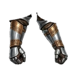
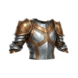
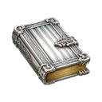

Frozen Mountains
Hunting groundT4Lv 16-20
Creatures
EXP and gold for defeating one creature. The EXP you actually receive also depends on your level and your bonuses; the creature's card in the game shows your own amount.
| Creature | Level | Base EXP | Gold reward | Drops |
|---|---|---|---|---|
| Mountain Orc | Lv 16 | 5,737 | 252 |  Upgrade Stone T3 Upgrade Stone T3  Silver Helmet T4 Silver Helmet T4  Silver Pickaxe T4 Silver Pickaxe T4 |
| Harpy Scout | Lv 17 | 9,038 | 397 | Upgrade Stone T3  Silver Gloves T4 Silver Sickle T4 Silver Sickle T4 |
| Stone Golem | Lv 18 | 13,945 | 612 | Upgrade Stone T3  Silver Boots T4 Silver Boots T4  Silver Rod T4 Silver Rod T4 |
| Frost Troll | Lv 19 | 21,251 | 934 | Upgrade Stone T3  Silver Chest T4 |
| Mountain Giant | Lv 20 | 36,014 | 1,582 | Upgrade Stone T3  Silver Pants T4 Silver Pants T4  Silver Quiver T4 Silver Quiver T4  Silver Shield T4 Silver Shield T4  Silver Tome T4 Silver Bow T4 Silver Bow T4  Silver Mace T4 Silver Mace T4  Silver Staff T4 Silver Staff T4  Silver Sword T4 Silver Sword T4 |
Gathering
Gathering gives profession EXP instead of character EXP.